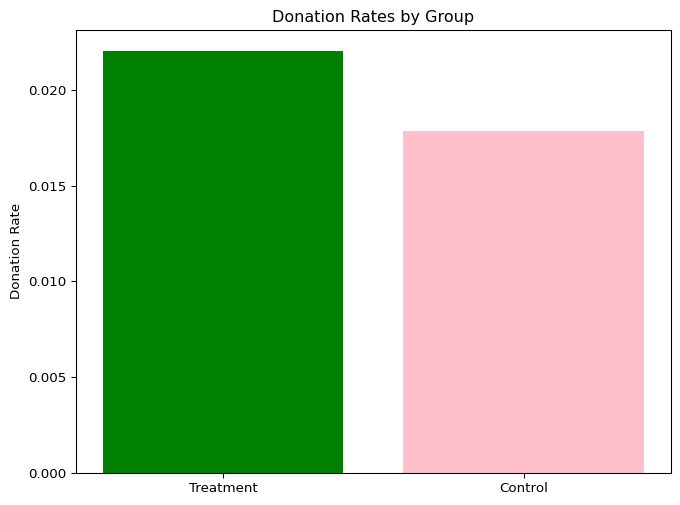
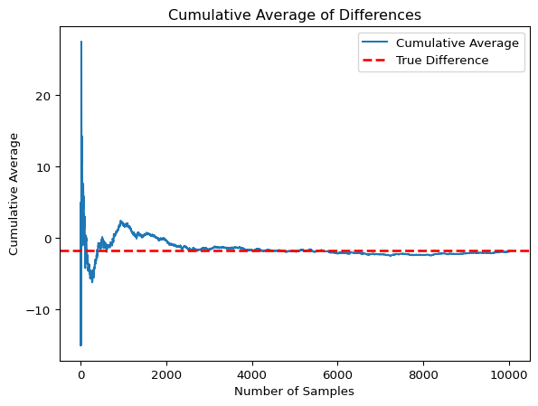

In their 2007 study published in the American Economic Review, economists Dean Karlan (Yale University) and John List (University of Chicago) conducted a large-scale field experiment to evaluate the impact of different types of fundraising appeals on charitable giving. The experiment was designed to test whether certain behavioral economic principles—specifically, those involving matching and challenge grants—could significantly influence donor behavior.
The researchers partnered with a nonprofit organization to send out 50,000 fundraising letters to potential donors. These individuals were randomly assigned to receive one of three types of solicitation letters:
Standard Letter: This control condition contained a straightforward appeal for donations, with no mention of matching or challenge grants.
Matching Grant Letter: This version of the letter informed potential donors that their contributions would be matched dollar-for-dollar by a large donor, effectively doubling the impact of each gift. The idea was to invoke a sense of increased efficacy and urgency.
Challenge Grant Letter: In this version, the letter stated that a large donor had already pledged a significant amount of funding, contingent on the organization’s ability to raise additional funds from other donors. This framed the recipient’s contribution as necessary to “meet the challenge” and unlock previously pledged money.
Each treatment group was randomized to ensure that differences in response could be causally attributed to the content of the letter. The researchers then tracked various outcomes, such as the likelihood of donating, the amount donated, and donor heterogeneity in response to the different appeals.
The key finding was that matching grants significantly increased both the likelihood of donating and the average donation amount, while challenge grants did not perform significantly better than the standard appeal. The results provided empirical support for the effectiveness of matching mechanisms in charitable fundraising and have since influenced both economic theory and practical strategies used by nonprofit organizations.
Data Exploration
import pandas as pdimport numpy as npkarlan_data = pd.read_stata('karlan_list_2007.dta')print(karlan_data.shape)print(karlan_data.columns)print(karlan_data.isnull().sum())print(karlan_data.describe(include='all'))print(karlan_data['treatment'].value_counts(normalize=True)) #treatment proportionprint(karlan_data['gave'].value_counts(normalize=True)) #donation rate print(karlan_data['amount'].mean()) print(karlan_data.dtypes) #capping preview for notebookpd.set_option('display.max_columns', 10)
The history saving thread hit an unexpected error (DatabaseError('database disk image is malformed')).History will not be written to the database.
(50083, 51)
Index(['treatment', 'control', 'ratio', 'ratio2', 'ratio3', 'size', 'size25',
'size50', 'size100', 'sizeno', 'ask', 'askd1', 'askd2', 'askd3', 'ask1',
'ask2', 'ask3', 'amount', 'gave', 'amountchange', 'hpa', 'ltmedmra',
'freq', 'years', 'year5', 'mrm2', 'dormant', 'female', 'couple',
'state50one', 'nonlit', 'cases', 'statecnt', 'stateresponse',
'stateresponset', 'stateresponsec', 'stateresponsetminc', 'perbush',
'close25', 'red0', 'blue0', 'redcty', 'bluecty', 'pwhite', 'pblack',
'page18_39', 'ave_hh_sz', 'median_hhincome', 'powner', 'psch_atlstba',
'pop_propurban'],
dtype='object')
treatment 0
control 0
ratio 0
ratio2 0
ratio3 0
size 0
size25 0
size50 0
size100 0
sizeno 0
ask 0
askd1 0
askd2 0
askd3 0
ask1 0
ask2 0
ask3 0
amount 0
gave 0
amountchange 0
hpa 0
ltmedmra 0
freq 0
years 1
year5 0
mrm2 1
dormant 0
female 1111
couple 1148
state50one 0
nonlit 452
cases 452
statecnt 0
stateresponse 0
stateresponset 0
stateresponsec 3
stateresponsetminc 3
perbush 35
close25 35
red0 35
blue0 35
redcty 105
bluecty 105
pwhite 1866
pblack 2036
page18_39 1866
ave_hh_sz 1862
median_hhincome 1874
powner 1869
psch_atlstba 1868
pop_propurban 1866
dtype: int64
treatment control ratio ratio2 ratio3 \
count 50083.000000 50083.000000 50083 50083.000000 50083.000000
unique NaN NaN 4 NaN NaN
top NaN NaN Control NaN NaN
freq NaN NaN 16687 NaN NaN
mean 0.666813 0.333187 NaN 0.222311 0.222211
std 0.471357 0.471357 NaN 0.415803 0.415736
min 0.000000 0.000000 NaN 0.000000 0.000000
25% 0.000000 0.000000 NaN 0.000000 0.000000
50% 1.000000 0.000000 NaN 0.000000 0.000000
75% 1.000000 1.000000 NaN 0.000000 0.000000
max 1.000000 1.000000 NaN 1.000000 1.000000
size size25 size50 size100 sizeno ... \
count 50083 50083.000000 50083.000000 50083.000000 50083.000000 ...
unique 5 NaN NaN NaN NaN ...
top Control NaN NaN NaN NaN ...
freq 16687 NaN NaN NaN NaN ...
mean NaN 0.166723 0.166623 0.166723 0.166743 ...
std NaN 0.372732 0.372643 0.372732 0.372750 ...
min NaN 0.000000 0.000000 0.000000 0.000000 ...
25% NaN 0.000000 0.000000 0.000000 0.000000 ...
50% NaN 0.000000 0.000000 0.000000 0.000000 ...
75% NaN 0.000000 0.000000 0.000000 0.000000 ...
max NaN 1.000000 1.000000 1.000000 1.000000 ...
redcty bluecty pwhite pblack page18_39 \
count 49978.000000 49978.000000 48217.000000 48047.000000 48217.000000
unique NaN NaN NaN NaN NaN
top NaN NaN NaN NaN NaN
freq NaN NaN NaN NaN NaN
mean 0.510245 0.488715 0.819599 0.086710 0.321694
std 0.499900 0.499878 0.168561 0.135868 0.103039
min 0.000000 0.000000 0.009418 0.000000 0.000000
25% 0.000000 0.000000 0.755845 0.014729 0.258311
50% 1.000000 0.000000 0.872797 0.036554 0.305534
75% 1.000000 1.000000 0.938827 0.090882 0.369132
max 1.000000 1.000000 1.000000 0.989622 0.997544
ave_hh_sz median_hhincome powner psch_atlstba \
count 48221.000000 48209.000000 48214.000000 48215.000000
unique NaN NaN NaN NaN
top NaN NaN NaN NaN
freq NaN NaN NaN NaN
mean 2.429012 54815.700533 0.669418 0.391661
std 0.378115 22027.316665 0.193405 0.186599
min 0.000000 5000.000000 0.000000 0.000000
25% 2.210000 39181.000000 0.560222 0.235647
50% 2.440000 50673.000000 0.712296 0.373744
75% 2.660000 66005.000000 0.816798 0.530036
max 5.270000 200001.000000 1.000000 1.000000
pop_propurban
count 48217.000000
unique NaN
top NaN
freq NaN
mean 0.871968
std 0.258654
min 0.000000
25% 0.884929
50% 1.000000
75% 1.000000
max 1.000000
[11 rows x 51 columns]
treatment
1 0.666813
0 0.333187
Name: proportion, dtype: float64
gave
0 0.979354
1 0.020646
Name: proportion, dtype: float64
0.91569394
treatment int8
control int8
ratio category
ratio2 int8
ratio3 int8
size category
size25 int8
size50 int8
size100 int8
sizeno int8
ask category
askd1 int8
askd2 int8
askd3 int8
ask1 int16
ask2 int16
ask3 int16
amount float32
gave int8
amountchange float32
hpa float32
ltmedmra int8
freq int16
years float64
year5 int8
mrm2 float64
dormant int8
female float64
couple float64
state50one int8
nonlit float64
cases float64
statecnt float32
stateresponse float32
stateresponset float32
stateresponsec float32
stateresponsetminc float32
perbush float32
close25 float64
red0 float64
blue0 float64
redcty float64
bluecty float64
pwhite float32
pblack float32
page18_39 float32
ave_hh_sz float32
median_hhincome float64
powner float32
psch_atlstba float32
pop_propurban float32
dtype: object
Balance Test
As an ad hoc test of the randomization mechanism, I provide a series of tests that compare aspects of the treatment and control groups to assess whether they are statistically significantly different from one another.
When doing the linear regression, regress for example mrm2 on treatment and look at the estimated coefficient on the treatment variable. It might be helpful to compare parts of your analysis to Table 1 in the paper. Be sure to comment on your results (hint: why is Table 1 included in the paper)._
I will be testing the following variables to ensure that the treatment and control groups are statistically similar: - mrm2: The number of months since the last donation. - bluecty : If the potential donor lives in a blue county. - freq: The number of prior donations. - female: The gender to the donor.
With a t-statistic of .12, which is not more extreme than 1.96, we fail to reject the null hypothesis that the treatment and control groups are statistically significantly different from one another at the 95% confidence level.
Additionally, when we run this t-statistic through a pre-built program, we find the p_value is actually .905, which much higher than the .05 threshold we would need to reject the null hypothesis.
Linear regression (OLS)
Data : karlan
Response variable : mrm2
Explanatory variables: control
Null hyp.: the effect of x on mrm2 is zero
Alt. hyp.: the effect of x on mrm2 is not zero
coefficient std.error t.value p.value
Intercept 13.012 0.066 196.815 < .001 ***
control -0.014 0.115 -0.119 0.905
Signif. codes: 0 '***' 0.001 '**' 0.01 '*' 0.05 '.' 0.1 ' ' 1
R-squared: 0.0, Adjusted R-squared: -0.0
F-statistic: 0.014 df(1, 50080), p.value 0.905
Nr obs: 50,082 (1 obs. dropped)
Sum of squares:
df SS
Regression 1 2
Error 50,080 7,309,835
Total 50,081 7,309,837
Root Mean Square Error (RMSE):
12.081
The positive t-statistic is minimal but indicates the treatment group has a slightly higher number of months since last donation. The p-value is well above 0.05, indicating that this difference is not statistically significant at the 95% confidence level. These are the same results we saw with our manual t-test calculation.
The t-statistic is -0.85, which is not more extreme than -1.96, we fail to reject the null hypothesis that the treatment and control groups are statistically significantly different from one another at the 95% confidence level for the blue county variable.
Linear regression (OLS)
Data : karlan
Response variable : bluecty
Explanatory variables: control
Null hyp.: the effect of x on bluecty is zero
Alt. hyp.: the effect of x on bluecty is not zero
coefficient std.error t.value p.value
Intercept 0.487 0.003 177.974 < .001 ***
control 0.004 0.005 0.854 0.393
Signif. codes: 0 '***' 0.001 '**' 0.01 '*' 0.05 '.' 0.1 ' ' 1
R-squared: 0.0, Adjusted R-squared: -0.0
F-statistic: 0.729 df(1, 49976), p.value 0.393
Nr obs: 49,978 (105 obs. dropped)
Sum of squares:
df SS
Regression 1 0
Error 49,976 12,487
Total 49,977 12,488
Root Mean Square Error (RMSE):
0.5
We see the same t-statistic here, and the p-value is .396, which is well above the .05 threshold we would need to reject the null hypothesis.
Manual t-statistic: -0.11084502380904246
Linear regression (OLS)
Data : karlan
Response variable : freq
Explanatory variables: control
Null hyp.: the effect of x on freq is zero
Alt. hyp.: the effect of x on freq is not zero
coefficient std.error t.value p.value
Intercept 8.035 0.062 128.871 < .001 ***
control 0.012 0.108 0.111 0.912
Signif. codes: 0 '***' 0.001 '**' 0.01 '*' 0.05 '.' 0.1 ' ' 1
R-squared: 0.0, Adjusted R-squared: -0.0
F-statistic: 0.012 df(1, 50081), p.value 0.912
Nr obs: 50,083
Sum of squares:
df SS
Regression 1 1
Error 50,081 6,502,323
Total 50,082 6,502,325
Root Mean Square Error (RMSE):
11.394
There is no significant difference between the treatment and control groups in terms of the number of prior donations. The t-statistic is very close to zero, and the p-value is well above 0.05, indicating no statistically significant difference at the 95% confidence level. This is consistent across both the t-test and linear regression.
Manual t-statistic: -1.7535132542519636
Linear regression (OLS)
Data : karlan
Response variable : female
Explanatory variables: control
Null hyp.: the effect of x on female is zero
Alt. hyp.: the effect of x on female is not zero
coefficient std.error t.value p.value
Intercept 0.275 0.002 110.987 < .001 ***
control 0.008 0.004 1.758 0.079 .
Signif. codes: 0 '***' 0.001 '**' 0.01 '*' 0.05 '.' 0.1 ' ' 1
R-squared: 0.0, Adjusted R-squared: 0.0
F-statistic: 3.092 df(1, 48970), p.value 0.079
Nr obs: 48,972 (1,111 obs. dropped)
Sum of squares:
df SS
Regression 1 0
Error 48,970 9,821
Total 48,971 9,822
Root Mean Square Error (RMSE):
0.448
Here the t-statistic generated from the manual test is close to -1.96, but still less extreme at -1.75. This means we fail to reject the null hypothesis that the treatment and control groups are statistically significantly different from one another at the 95% confidence level.
When we run this through a pre-built program, we find the p-value is .08, which is above the .05 threshold but below the .10 threshold.
The difference between the percentage of female potential donors is marginally different between the two groups, this difference is not significant at the 95% confidence level. This is true in both the t-test and the linear regression. This variable however does have a significant difference at the 90% confidence level, so it would be worth noting.
Charitable Contribution Made
First, I analyze whether matched donations lead to an increased response rate of making a donation.
import matplotlib.pyplot as pltdonated_treatment = karlan_data[karlan_data['treatment'] ==1]["gave"].mean()print(f"{round(donated_treatment*100,2)}% of treatment group donated")donated_control = karlan_data[karlan_data['control'] ==1]["gave"].mean()print(f"{round(donated_control*100,2)}% of control group donated")plt.figure(figsize=(8, 6))plt.bar(['Treatment', 'Control'], [donated_treatment, donated_control], color=['green', 'pink'])plt.title('Donation Rates by Group')plt.ylabel('Donation Rate')
2.2% of treatment group donated
1.79% of control group donated
Text(0, 0.5, 'Donation Rate')

#groupstreatment_group = karlan_data[karlan_data['treatment'] ==1]['gave']control_group = karlan_data[karlan_data['control'] ==1]['gave']# t_testn1, n2 =len(treatment_group), len(control_group)mean1, mean2 = np.mean(treatment_group), np.mean(control_group)var1, var2 = np.var(treatment_group, ddof=1), np.var(control_group, ddof=1)# Standard errorse = np.sqrt(var1/n1 + var2/n2)# t-statt_manual = (mean1 - mean2) / seprint("Manual t-statistic:", t_manual)#linear regressionreg = rsm.model.regress({"karlan": karlan_data}, rvar="gave", evar=["control"])reg.summary(rmse=True, ssq=True)#probit regressionimport statsmodels.api as smX = karlan_data['treatment']Y = karlan_data['gave']X = sm.add_constant(X)# probit modelprobit_model = sm.Probit(Y, X)result = probit_model.fit()print(result.summary())#marginal effects to see if results match from the studymfx = result.get_margeff()print(mfx.summary())
Manual t-statistic: 3.2094621908279835
Linear regression (OLS)
Data : karlan
Response variable : gave
Explanatory variables: control
Null hyp.: the effect of x on gave is zero
Alt. hyp.: the effect of x on gave is not zero
coefficient std.error t.value p.value
Intercept 0.022 0.001 28.326 < .001 ***
control -0.004 0.001 -3.101 0.002 **
Signif. codes: 0 '***' 0.001 '**' 0.01 '*' 0.05 '.' 0.1 ' ' 1
R-squared: 0.0, Adjusted R-squared: 0.0
F-statistic: 9.618 df(1, 50081), p.value 0.002
Nr obs: 50,083
Sum of squares:
df SS
Regression 1 0
Error 50,081 1,012
Total 50,082 1,012
Root Mean Square Error (RMSE):
0.142
Optimization terminated successfully.
Current function value: 0.100443
Iterations 7
Probit Regression Results
==============================================================================
Dep. Variable: gave No. Observations: 50083
Model: Probit Df Residuals: 50081
Method: MLE Df Model: 1
Date: Wed, 28 May 2025 Pseudo R-squ.: 0.0009783
Time: 19:32:44 Log-Likelihood: -5030.5
converged: True LL-Null: -5035.4
Covariance Type: nonrobust LLR p-value: 0.001696
==============================================================================
coef std err z P>|z| [0.025 0.975]
------------------------------------------------------------------------------
const -2.1001 0.023 -90.073 0.000 -2.146 -2.054
treatment 0.0868 0.028 3.113 0.002 0.032 0.141
==============================================================================
Probit Marginal Effects
=====================================
Dep. Variable: gave
Method: dydx
At: overall
==============================================================================
dy/dx std err z P>|z| [0.025 0.975]
------------------------------------------------------------------------------
treatment 0.0043 0.001 3.104 0.002 0.002 0.007
==============================================================================
There difference between the treatment and control group’s response rate is significant at the 95% confidence level (the t-value is more extreme than 1.96 for a two-tailed test). The treatment group has a higher response rate than the control group, which suggests that the matching grant appeal is effective in increasing the likelihood of making a donation. This finding aligns with the hypothesis that matching grants can enhance donor motivation and engagement.
Differences between Match Rates
Next, I assess the effectiveness of different sizes of matched donations on the response rate.
The negative t-statistic indicates that the 2:1 match ratio has a higher mean that the 1:1 ratio, however this difference is not significant at the 95% confidence level. The p-value is .34, which is well above the .05 threshold we would need to reject the null hypothesis.
The same applies to the 3:1 match ratio, with a p-value of .96 and a smaller difference between the two groups.
todo: Assess the same issue using a regression. Specifically, create the variable ratio1 then regress gave on ratio1, ratio2, and ratio3 (or alternatively, regress gave on the categorical variable ratio). Interpret the coefficients and their statistical precision.
karlan_data["ratio1"] = (karlan_data["ratio"] ==1).astype(int)X = karlan_data[['ratio1','ratio2','ratio3']]Y = karlan_data['gave']X = sm.add_constant(X)# probit modelprobit_model = sm.Probit(Y, X)result = probit_model.fit()print(result.summary())#marginal effects to see if results match from the studymfx = result.get_margeff()print(mfx.summary())
1:1 ratio shows a coefficient 0.062, meaning the 1:1 ratio is less likely to lead to a donation than the other ratio’s but a match should still increase the probability for a give. The 2:1 ratio has an odds ratio of 0.0980, meaning it is slightly more likely to lead to a donation than the control group. The 3:1 ratio has an odds ratio of 0.0998, meaning it is slightly more likely to lead to a donation than the 2:1 ratio. The p_values indicate that the results for ratio 2 and ratio 3 are statistically significant at the 95% confidence level, while the results for ratio 1 are not.
Calculating the response rate differences between match ratios:
#Difference in effects diff_2_1_vs_1_1= coef_2_1 - coef_1_1 diff_3_1_vs_2_1= coef_3_1 - coef_2_1 print(“Regression-basedeffect of 3:1 vs 2:1 match:”, diff_3_1_vs_2_1) print(“Regression-basedeffect of 2:1 vs 1:1 match:”, diff_2_1_vs_1_1)
Both raw and model-based results suggest that increasing the match ratio from 1:1 to 2:1 significantly improves donation rates. However, increasing it further to 3:1 provides almost no additional benefit. These findings support the paper’s interpretation that higher match ratios can increase giving, but they also highlight diminishing returns at higher match levels.
The p-values for ratio1 are significant at the 90% level but the results for ratio2 and ratio3 are significant at the 95% level..
Based on the probit model, the 3:1 match leads to a slightly higher (0.0018) latent index score for donation compared to the 2:1 match, holding everything else constant.
Size of Charitable Contribution
In this subsection, I analyze the effect of the size of matched donation on the size of the charitable contribution (amount of donation).
Linear regression (OLS)
Data : karlan
Response variable : amount
Explanatory variables: treatment
Null hyp.: the effect of x on amount is zero
Alt. hyp.: the effect of x on amount is not zero
coefficient std.error t.value p.value
Intercept 0.813 0.067 12.063 < .001 ***
treatment 0.154 0.083 1.861 0.063 .
Signif. codes: 0 '***' 0.001 '**' 0.01 '*' 0.05 '.' 0.1 ' ' 1
R-squared: 0.0, Adjusted R-squared: 0.0
F-statistic: 3.461 df(1, 50081), p.value 0.063
Nr obs: 50,083
In the regression above, we learn that treatment effect has a slightly significant (not at the 95% confidence level and small) effect on size of donation.
Linear regression (OLS)
Data : karlan
Response variable : amount
Explanatory variables: treatment
Null hyp.: the effect of x on amount is zero
Alt. hyp.: the effect of x on amount is not zero
coefficient std.error t.value p.value
Intercept 45.540 2.423 18.792 < .001 ***
treatment -1.668 2.872 -0.581 0.561
Signif. codes: 0 '***' 0.001 '**' 0.01 '*' 0.05 '.' 0.1 ' ' 1
R-squared: 0.0, Adjusted R-squared: -0.001
F-statistic: 0.337 df(1, 1032), p.value 0.561
Nr obs: 1,034
When only including donors, the coefficient of the regression shows us the treatment group donates about $1.67 less than the control group, however this result is not significant at the 95% confidence level. This does not have a causal interpretation because treatment may affect the likelihood of donating, and here we’re looking at the size of the donation conditional on donating.
As a reminder of how the t-statistic “works,” in this section I use simulation to demonstrate the Law of Large Numbers and the Central Limit Theorem.
Suppose the true distribution of respondents who do not get a charitable donation match is Bernoulli with probability p=0.018 that a donation is made. Further suppose that the true distribution of respondents who do get a charitable donation match of any size is Bernoulli with probability p=0.022 that a donation is made.
Law of Large Numbers
Here, I simulate 10,000 draws from the control and treatment groups, then calculate their differences.
#Simulated Numbersnp.random.seed(1) # For reproducibilitsim_control = np.random.choice(control_donors, size=10000, replace=True)sim_treated = np.random.choice(treated_donors, size=10000, replace=True)diff=sim_treated-sim_control#Cumulative Averagecumulative_avg = np.cumsum(diff) / np.arange(1, len(diff) +1)#True Difference in meansTrue_Diff = treated_donors.mean() - control_donors.mean()plt.plot(cumulative_avg, label='Cumulative Average')plt.axhline(True_Diff, color='red', linestyle='dashed', linewidth=2, label='True Difference')plt.title('Cumulative Average of Differences')plt.xlabel('Number of Samples')plt.ylabel('Cumulative Average')plt.legend()

By plotting the cumulative average, we can see it approaches the true difference in means. As we increase the number of samples, the variation stabilizes. The cumulative average converges to the true difference in means. This demonstrates the Law of Large Numbers, as the sample mean approaches the population mean as the sample size increases.
Central Limit Theorem
Below are 4 histograms with the difference between the control and treatment group in samples sizes of 50,100,150,and 200. We then repeat the sampling 1000x to see the averages
The four histograms above illustrate how the distribution of average differences in donation rates between treatment and control groups evolves as sample size increases. This simulation confirms the Central Limit Theorem (CLT).
At n = 50, the distribution is wide and relatively flat, and zero lies close to the center. This shows that with small sample sizes, we often can’t distinguish signal from noise, and random variation makes the estimated treatment effect unreliable.
At n = 200, the distribution becomes more symmetric and bell-shaped. The true treatment effect (0.004) begins to emerge, though zero is still within the central bulk of the distribution, indicating moderate uncertainty.
At n = 500, the distribution tightens further, and the center of the histogram clearly shifts to the right of zero. Zero now lies toward the edge (tail) of the distribution, which suggests that the true effect is increasingly distinguishable from no effect.
At n = 1000, the distribution is even narrower and sharply centered near 0.004. Zero is clearly in the tail, meaning that under this sample size, the true effect is more evident.
Conclusion: As sample size increases, the sampling distribution of the average difference becomes more normal and less variable, with its mean converging to the true treatment effect. Zero moves from the center to the tails of the distribution, reinforcing that larger samples improve the precision of effect estimates and the reliability of hypothesis testing.